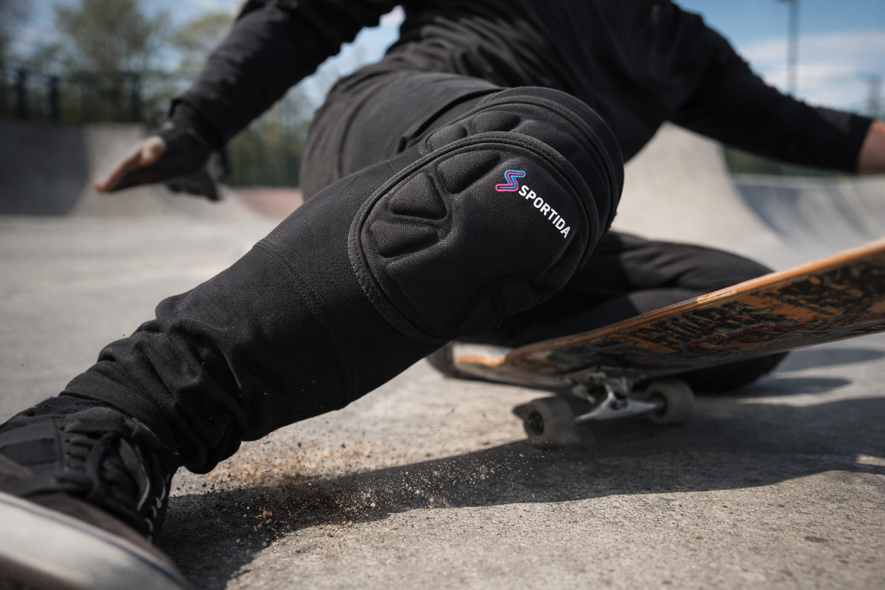
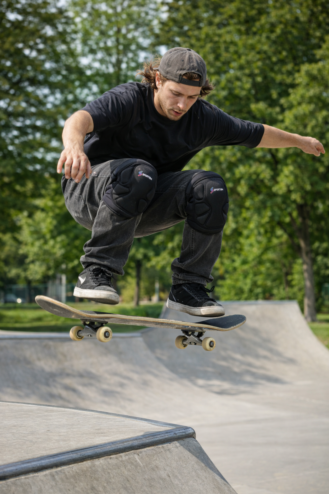

Impact Protection for Real Skateboarding
High-density EVA padding helps absorb heavy impact and protects your knees during falls, slides, and hard landings. These protective knee pads are built for street and park sessions.

Reliable knee protection, flexibility and comfort for skateboarding, BMX and skating.
View Full Product DetailsSportida S6764 knee pads combine impact protection, mobility, and long-session comfort, making them a dependable choice for action sports. If you need knee pads for skateboarding, BMX, and skating, these skateboard knee pads are designed to protect without slowing you down.
View Full Product Details
High-density EVA padding helps absorb heavy impact and protects your knees during falls, slides, and hard landings. These protective knee pads are built for street and park sessions.
The best knee pads for skateboarding should combine strong impact protection, enough flexibility for tricks and jumps, breathable fabric for heat control, and a secure fit that stays in place during long sessions.
The ergonomic construction supports natural movement so you can bend, push, and land with confidence. These skateboard knee pads stay flexible without sacrificing reliable protection.

These knee pads are suitable for multiple action sports:
Knee pads are useful in skate parks, street sessions, and whenever you are learning new tricks. They help protect your knees during falls and repeated impacts.
Yes. Sportida S6764 is built as skateboard knee pads with impact-ready EVA foam and a movement-friendly ergonomic fit.
Yes. The lightweight build and breathable compression fabric help reduce discomfort during extended rides.
Absolutely. These knee pads for skateboarding are also suitable for BMX, roller skating, scooters, and longboarding.
See current pricing and stock for Sportida S6764 knee pads.
See Full Product Page